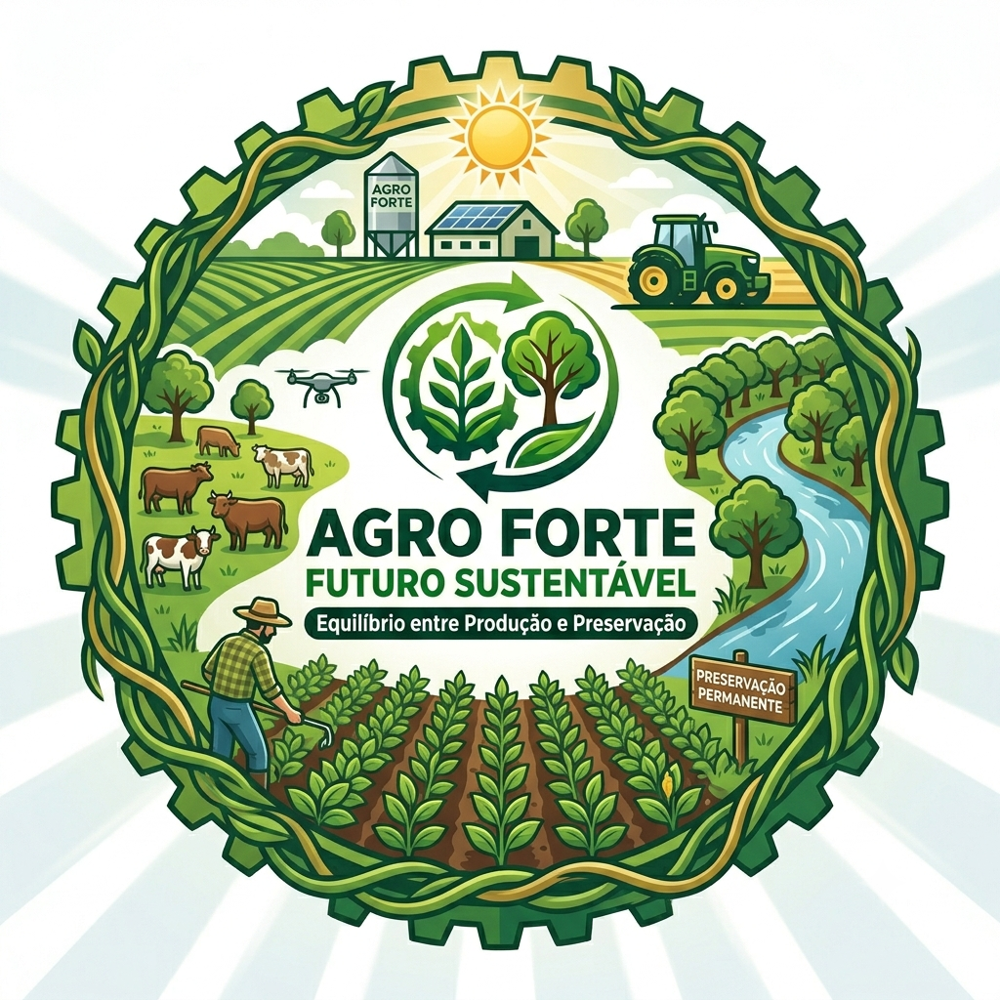

🌾 O que é agro forte e sustentável?
O agro forte é aquele que consegue produzir alimentos em grande escala, garantindo o desenvolvimento econômico e o abastecimento da população, sem deixar de lado a preservação do meio ambiente.
🚜 Tecnologia no campo
A agricultura moderna utiliza tecnologias como drones, sensores, máquinas automatizadas e inteligência artificial.
⚠️ Desafios ambientais
O setor enfrenta problemas como desmatamento, degradação do solo e poluição da água.
🌍 Soluções sustentáveis
Práticas como rotação de culturas e integração lavoura-pecuária-floresta ajudam a preservar o meio ambiente.
🌾 Sustentabilidade no campo
A sustentabilidade na agricultura busca produzir alimentos sem esgotar os recursos naturais.
💧 Uso consciente da água
A irrigação inteligente ajuda a economizar água e evita desperdícios no campo.
🌳 Preservação ambiental
Manter áreas de vegetação nativa ajuda a proteger o solo e a biodiversidade.
🧑🌾 Trabalho no campo
O agronegócio gera empregos e está cada vez mais moderno com tecnologia.
🌎 Futuro do agronegócio
O futuro depende do equilíbrio entre produção e natureza.
